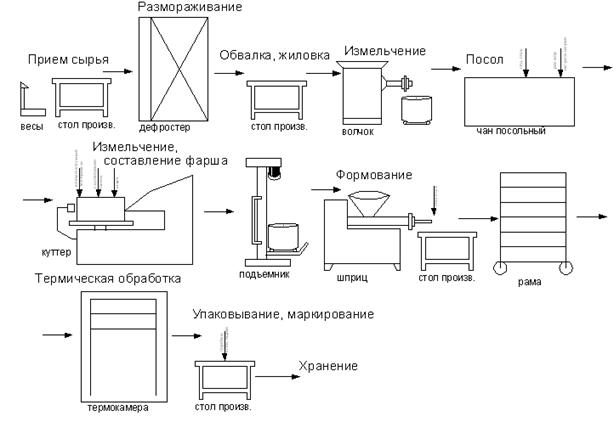

Технология производсва варенных колбас
Приемка,зачистка и разделка полутуш
¯
Обвалка и жиловка мяса
Измельчения мясного сырья
Посол
Приготовление фарша
Наполнение оболочек и вязка батонов
Жарка
Варка
Охлаждение
Проверка и упаковывание
